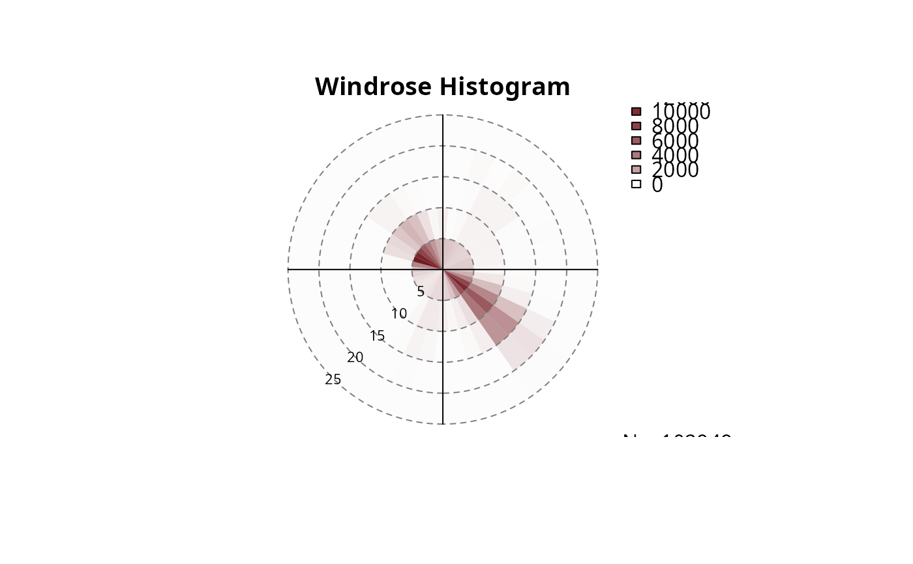

foehnix Mixture Model Windrose Plot
windrose(x, ...)
# S3 method for foehnix
windrose(
x,
type = NULL,
which = NULL,
ddvar = "dd",
ffvar = "ff",
breaks = NULL,
ncol = NULL,
maxpp = Inf,
...,
main = NULL
)Arguments
- x
object of class
foehnixif the windrose plot is applied to a model, or a vector of wind directions forwindrose.default(see 'Details' section).- ...
forwarded to
windrose.default.- type
NULLor character, one ofdensityorhistogram. IfNULLboth types will be plotted.- which
NULLor character, one ofunconditional,nofoehn, orfoehn. IfNULLall three will be plotted.- ddvar
character, name of the column in the training data set which contains the wind direction information.
- ffvar
character, name of the column in the training data set which contains the wind speed (or gust speed) data.
- breaks
NULLor a numeric vector to define the wind speed (ff) breaks.- ncol
integer, number of columns of subplots.
- maxpp
integer (
>0), maximum plots per page. Not all plots fit on one page the script loops trough.- main
NULL(default) or character. IfNULLthe function will add default figure titles.
Details
Windrose plot based on a foehnix mixture model object.
Allows to draw windrose plots from foehnix mixture model
object or a set of observations. If input x to windrose is
an object of class foehnix (as returned by foehnix) the
data set which the classification is based on is used to plot the windrose.
If inputs dd and ff are given (univariate zoo time series
objects or numeric vectors) windrose plots can be plotted for observations
without the need of a foehnix object.
Two types are available: circular density plots and circular
histograms. If the input argument x is a foehnix object an additional
input argument which is available to specify the subset which should be used
to create the windrose plots. The following inputs are allowed:
which = "unconditional": unconditional windrose (all observations of the data set used to estimate thefoehnixmodel).which = "nofoehn": windrose of all observations which have not been classified as foehn (probability< 0.5).which = "foehn": windrose of all observations classified as foehn events (probability>= 0.5).which = NULL: all three subsets will be plotted (individual windroses).
Specific combinations can be specified by calling the windrose function with e.g.,
type = "histogram" and which = c("foehn", "nofoehn") (will show
histograms for foehn and no foehn events), or type = NULL and which = "foehn"
(will show density and histogram plot for foehn events).
By default (type = NULL, which = NULL) all combinations will be plotted.
If dd and ff are set only the type argument is available
(type = "histogram" or type = "density").
Examples
# Loading combined demo data set
data <- demodata("tyrol") # default
# Before estimating a model: plot a wind rose for all observations
windrose(data$dd, data$ff, type = "histogram")

windrose(data$dd, data$ff, type = "density")
 # Estimate a foehnix foehn classification model
filter <- list(dd = c(43, 223), crest_dd = c(90, 270))
mod <- foehnix(diff_t ~ ff + rh, data = data,
filter = filter, verbose = FALSE)
# Plotting wind roses
windrose(mod)
# Estimate a foehnix foehn classification model
filter <- list(dd = c(43, 223), crest_dd = c(90, 270))
mod <- foehnix(diff_t ~ ff + rh, data = data,
filter = filter, verbose = FALSE)
# Plotting wind roses
windrose(mod)
 # Only density windrose for foehn events
windrose(mod, type = "density", which = "foehn")
# Only density windrose for foehn events
windrose(mod, type = "density", which = "foehn")
 # Using custom names: by default wind direction is expected
# to be called 'dd', wind speed is expected to be called 'ff'.
# However, ddvar and ffvar allow to change that (only if
# windrose is called with a foehnix object as input).
# An example:
# - make a copy of data to data2
# - rename dd to winddir, crest_dd to crest_winddir
# - estimate the same foehnix model as above using the
# new variable names
# - plot windrose with custom names for wind direction (winddir)
# and wind speed (windspd).
data2 <- data
names(data2)[which(names(data2) == "ff")] <- "windspd"
names(data2)[which(names(data2) == "dd")] <- "winddir"
names(data2)[which(names(data2) == "crest_dd")] <- "crest_winddir"
print(head(data2))
#> winddir windspd rh t crest_winddir crest_ff crest_rh
#> 2006-01-01 01:00:00 171 0.6 90 -0.4 180 10.8 100
#> 2006-01-01 02:00:00 268 0.3 100 -1.8 186 12.5 100
#> 2006-01-01 03:00:00 115 5.2 79 0.9 181 11.3 100
#> 2006-01-01 04:00:00 152 2.1 88 -0.6 178 13.3 100
#> 2006-01-01 05:00:00 319 0.7 100 -2.6 176 13.1 100
#> 2006-01-01 06:00:00 36 0.1 99 -1.7 184 10.0 100
#> crest_t diff_t
#> 2006-01-01 01:00:00 -7.8 2.87
#> 2006-01-01 02:00:00 -8.0 4.07
#> 2006-01-01 03:00:00 -7.4 1.97
#> 2006-01-01 04:00:00 -7.5 3.37
#> 2006-01-01 05:00:00 -7.1 5.77
#> 2006-01-01 06:00:00 -6.9 5.07
filter2 <- list(winddir = c(43, 223), crest_winddir = c(90, 270))
mod2 <- foehnix(diff_t ~ windspd + rh, data = data2,
filter = filter2, verbose = FALSE)
windrose(mod2, type = "density", which = "foehn",
ddvar = "winddir", ffvar = "windspd")
# Using custom names: by default wind direction is expected
# to be called 'dd', wind speed is expected to be called 'ff'.
# However, ddvar and ffvar allow to change that (only if
# windrose is called with a foehnix object as input).
# An example:
# - make a copy of data to data2
# - rename dd to winddir, crest_dd to crest_winddir
# - estimate the same foehnix model as above using the
# new variable names
# - plot windrose with custom names for wind direction (winddir)
# and wind speed (windspd).
data2 <- data
names(data2)[which(names(data2) == "ff")] <- "windspd"
names(data2)[which(names(data2) == "dd")] <- "winddir"
names(data2)[which(names(data2) == "crest_dd")] <- "crest_winddir"
print(head(data2))
#> winddir windspd rh t crest_winddir crest_ff crest_rh
#> 2006-01-01 01:00:00 171 0.6 90 -0.4 180 10.8 100
#> 2006-01-01 02:00:00 268 0.3 100 -1.8 186 12.5 100
#> 2006-01-01 03:00:00 115 5.2 79 0.9 181 11.3 100
#> 2006-01-01 04:00:00 152 2.1 88 -0.6 178 13.3 100
#> 2006-01-01 05:00:00 319 0.7 100 -2.6 176 13.1 100
#> 2006-01-01 06:00:00 36 0.1 99 -1.7 184 10.0 100
#> crest_t diff_t
#> 2006-01-01 01:00:00 -7.8 2.87
#> 2006-01-01 02:00:00 -8.0 4.07
#> 2006-01-01 03:00:00 -7.4 1.97
#> 2006-01-01 04:00:00 -7.5 3.37
#> 2006-01-01 05:00:00 -7.1 5.77
#> 2006-01-01 06:00:00 -6.9 5.07
filter2 <- list(winddir = c(43, 223), crest_winddir = c(90, 270))
mod2 <- foehnix(diff_t ~ windspd + rh, data = data2,
filter = filter2, verbose = FALSE)
windrose(mod2, type = "density", which = "foehn",
ddvar = "winddir", ffvar = "windspd")